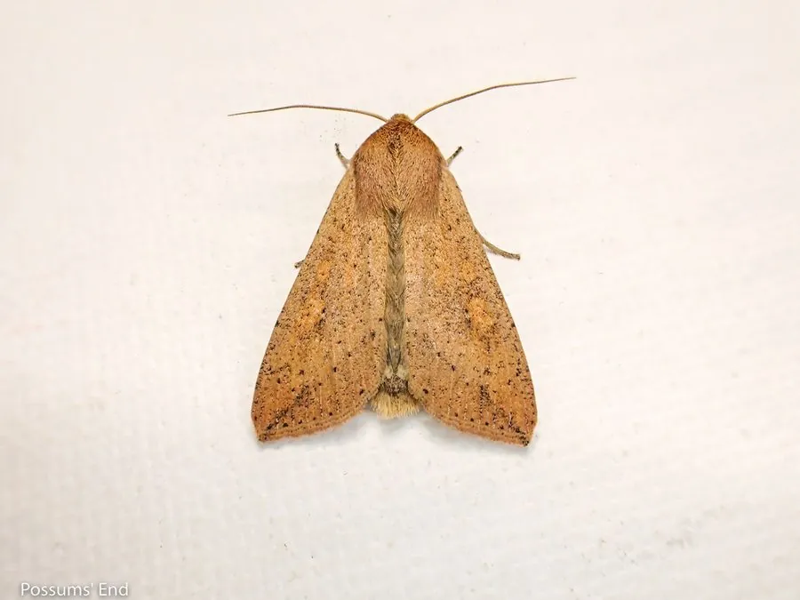

昆虫 · 动物界
黏虫 Mythimna separata

中国重要的迁飞性农业害虫，幼虫夜间取食禾谷类作物叶片，大发生时成群迁移，能把整片麦田吃成光秆。
- 分类
- 门节肢动物门纲昆虫纲目鳞翅目科夜蛾科属黏虫属
- 栖息环境
- 麦田、玉米地、稻田、草地等禾本科作物与野草环境
- 地理分布
- 中国各地农区，东亚及东南亚地区也有分布
- 保护级别
- IUCN 暂无评估；中国未列入国家重点保护名录
物种志
黏虫成虫翅展 3.5–4.5 厘米，体色呈淡黄褐或灰褐色，前翅有环状和肾状斑纹，中央有一条深色斜纹，后翅呈灰白色；雌蛾体型略大。幼虫体色多变，从绿色到黑褐色都有，体表有纵线，头部有“八”字形黑纹。
它在中国南北各地均有发生，寄主包括小麦、玉米、水稻、高粱等禾本科作物。黏虫是典型的迁飞性害虫，成虫能借助气流远距离迁飞，春季由南方向北迁飞，秋季再南返；幼虫昼伏夜出，取食作物叶片，大发生时成群迁移，可将整片麦田吃成光秆，历史上曾多次造成严重减产。它一年可发生多代，雌蛾产卵 500–1000 枚于作物叶尖或枯叶上。防治上应加强测报、诱杀成虫、保护和利用天敌，并在幼虫三龄前及时用药，目前未被列入国家重点保护名录。
形态与习性
- 食性幼虫取食小麦、玉米、水稻等禾本科作物叶片
- 翅展3.5–4.5 cm
- 寿命成虫约 1–2 周，一年可发生多代
- 繁殖卵生，雌蛾产卵 500–1000 枚
- 活动节律成虫夜间活动，幼虫昼伏夜出取食
- 危害大发生时成群迁移，可将整片麦田吃成光秆
趣味知识
- 黏虫是典型的迁飞性害虫，成虫能借助气流从南方迁飞到北方。
- 它的幼虫昼伏夜出，大发生时成群迁移，因此又叫“行军虫”。
- 黏虫幼虫三龄前是防治关键期，应及时用药并保护天敌。